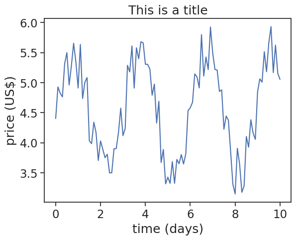
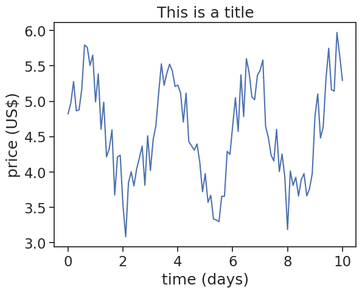
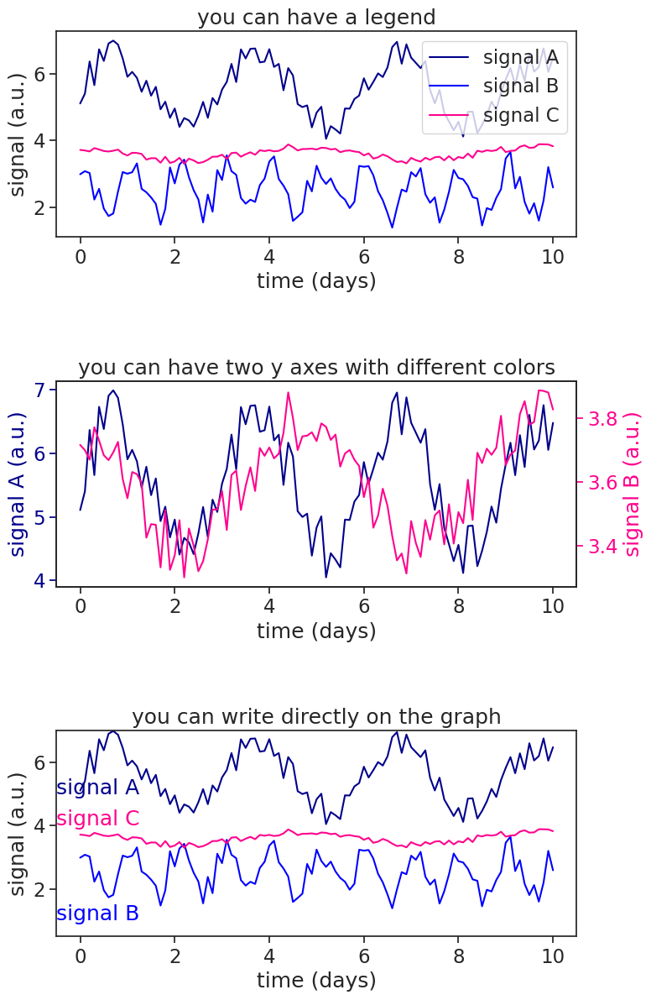

21 Plotting guidelines
21.1 increase fontsize to legible sizes
Graph with default matplotlib values:
plot with default matplotlib values

You can use seaborn to easily change plot style and font size:
plot after seaborn theme changes

I recommend that you read seaborn’s Controlling figure aesthetics.
21.2 choose colors wisely
define useful functions
import math
import matplotlib.colors as mcolors
from matplotlib.patches import Rectangle
def plot_colortable(colors, *, ncols=4, sort_colors=True):
cell_width = 212
cell_height = 22
swatch_width = 48
margin = 12
# Sort colors by hue, saturation, value and name.
if sort_colors is True:
names = sorted(
colors, key=lambda c: tuple(mcolors.rgb_to_hsv(mcolors.to_rgb(c))))
else:
names = list(colors)
n = len(names)
nrows = math.ceil(n / ncols)
width = cell_width * ncols + 2 * margin
height = cell_height * nrows + 2 * margin
dpi = 72
fig, ax = plt.subplots(figsize=(width / dpi, height / dpi), dpi=dpi)
fig.subplots_adjust(margin/width, margin/height,
(width-margin)/width, (height-margin)/height)
ax.set_xlim(0, cell_width * ncols)
ax.set_ylim(cell_height * (nrows-0.5), -cell_height/2.)
ax.yaxis.set_visible(False)
ax.xaxis.set_visible(False)
ax.set_axis_off()
for i, name in enumerate(names):
row = i % nrows
col = i // nrows
y = row * cell_height
swatch_start_x = cell_width * col
text_pos_x = cell_width * col + swatch_width + 7
ax.text(text_pos_x, y, name, fontsize=14,
horizontalalignment='left',
verticalalignment='center')
ax.add_patch(
Rectangle(xy=(swatch_start_x, y-9), width=swatch_width,
height=18, facecolor=colors[name], edgecolor='0.7')
)
return figWhen you plot with matplotlib, the default color order is the following. You can always specify a plot’s color by typing something like color="tab:red.
You can write other words as color names, see below.
This reminds me of this cartoon:
For almost all purposes, all these colors should be more than enough.
Be consistent!: if in one plot precipitation is blue and temperature is red, make sure you keep the same colors throughout your assignment.
Be mindful of blind-color people: A good rule of thumb is to avoid red and green shades in the same graph.
I’ll put a bunch of links below, this is for my own reference, but you are more than welcome to take a look.
21.3 the best legend is no legend
plot after seaborn theme changes
t = np.linspace(0, 10, 101)
y1 = np.sin(2.0*np.pi*t/3) + np.random.random(len(t)) + 5.0
y2 = 0.7*np.sin(2.0*np.pi*t/1+1.0) + np.random.random(len(t)) + 2.0
y3 = 0.2*np.sin(2.0*np.pi*t/5+2.0) + 0.2*np.random.random(len(t)) + 3.5
fig, ax = plt.subplots(3, 1, figsize=(8,14))
fig.subplots_adjust(hspace=0.7)
# you can use legends
ax[0].plot(t, y1, color="darkblue", label="signal A")
ax[0].plot(t, y2, color="blue", label="signal B")
ax[0].plot(t, y3, color="xkcd:hot pink", label="signal C")
ax[0].set(title="you can have a legend",
xlabel="time (days)",
ylabel="signal (a.u.)"
)
ax[0].legend()
# you can use an extra y axes
p1, = ax[1].plot(t, y1, color="darkblue")
ax[1].yaxis.label.set_color(p1.get_color())
ax[1].tick_params(axis='y', colors=p1.get_color())
ax[1].set(xlabel="time (days)",
ylabel="signal A (a.u.)",
title="you can have two y axes with different colors"
)
ax1b = plt.twinx(ax[1])
p2, = ax1b.plot(t, y3, color="xkcd:hot pink", label="signal C")
ax1b.set(ylabel="signal B (a.u.)"
)
ax1b.yaxis.label.set_color(p2.get_color())
ax1b.tick_params(axis='y', colors=p2.get_color())
# you can write directly on the graph
ax[2].plot(t, y1, color="darkblue", label="signal A")
ax[2].plot(t, y2, color="blue", label="signal B")
ax[2].plot(t, y3, color="xkcd:hot pink", label="signal C")
ax[2].set(xlabel="time (days)",
ylabel="signal (a.u.)",
ylim=[0.5,7],
title="you can write directly on the graph"
)
ax[2].text(-0.5, 5, "signal A", color="darkblue", ha="left")
ax[2].text(-0.5, 1, "signal B", color="blue", ha="left")
ax[2].text(-0.5, 4, "signal C", color="xkcd:hot pink", ha="left")Text(-0.5, 4, 'signal C')
You can also make a colorbar to substitute a legend.
make a discrete colorbar
num_lines = 6
t = np.linspace(0, 2, 101)
# Get truncated colormap
cmap = plt.colormaps.get_cmap('jet')
bottom = 0.6; top = 1.0
truncated_cmap = mcolors.LinearSegmentedColormap.from_list("truncated_viridis", cmap(np.linspace(bottom, top, num_lines)))
# Create a figure and axis
fig, ax = plt.subplots()
# Plot the lines with increasing frequency
for i in range(num_lines):
freq = i + 1
y = np.sin(2.0 * np.pi * t * freq) + 2*freq
ax.plot(t, y, color=truncated_cmap(i / (num_lines - 1)), label=f'Slope {slope}')
ax.set(xlabel="time (s)",
ylabel="signal")
# Create a discrete colorbar
boundaries = np.linspace(0.5, num_lines + 0.5, num_lines + 1)
ticks = np.arange(num_lines) + 1
norm = mcolors.BoundaryNorm(boundaries, truncated_cmap.N)
sm = plt.cm.ScalarMappable(cmap=truncated_cmap, norm=norm)
sm.set_array([]) # fake up the array of the scalar mappable
cbar = plt.colorbar(sm, ticks=ticks, boundaries=boundaries, label='frequency', ax=ax)
cbar.ax.tick_params(which='both', size=0)
freq_list = [f"{x+1} Hz" for x in range(num_lines)]
cbar.set_ticklabels(freq_list)